Wicked

Elphaba and Glina meet as students at Shiz University in the fantastical Land of Oz and forge an unlikely but profound friendship. After meeting the Wonderful Wizard of Oz, their friendship reaches a crossroads and their lives take very different paths.
Barbie
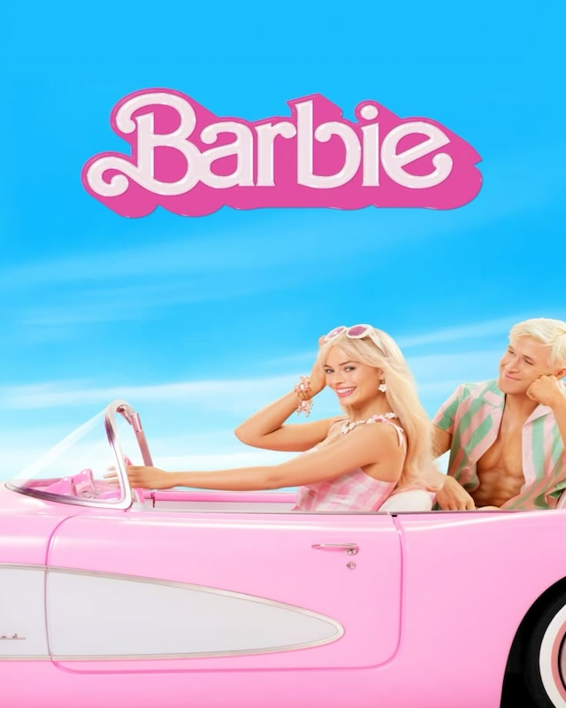To live in Barbie Land is to be a perfect being in a perfect place. Unless you have a full-on existential crisis. Or you're a Ken.
Frankenstein
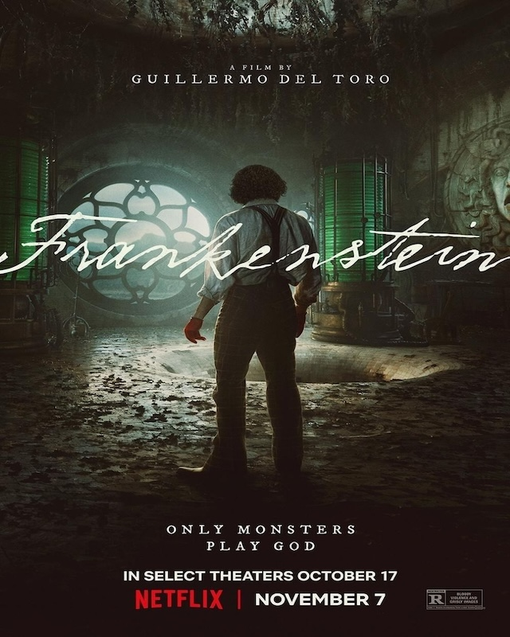Oscar-winning director Guillermo del Toro adapts Mary Shelley's classic tale of Victor Frankenstein, a brilliant but egotistical scientist who brings a creature to life in a monstrous experiment that ultimately leads to the undoing of both the creator and his tragic creation.
Corpse Bride
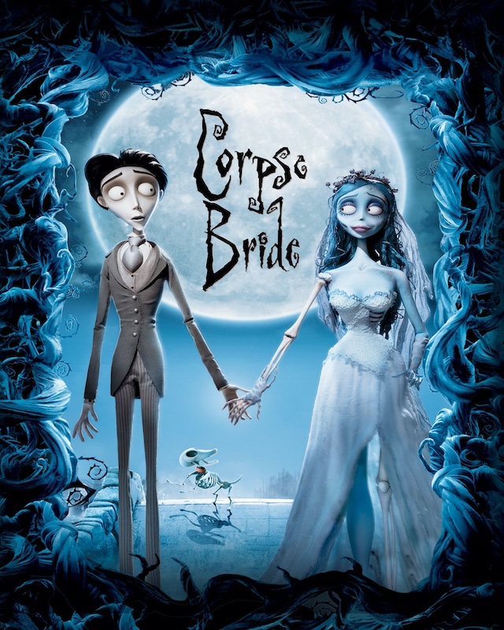Victor and Victoria's families have arranged their marriage. Though they like each other, Victor is nervous about the ceremony. While he's in a forest practicing his lines for the wedding, a tree branch becomes a hand that drags him to the land of the dead. Emily, who was murdered after eloping with her love and wants to marry Victor. Victor must get back aboveground before Victoria marries the villainous Barkis Bittern.
Coraline
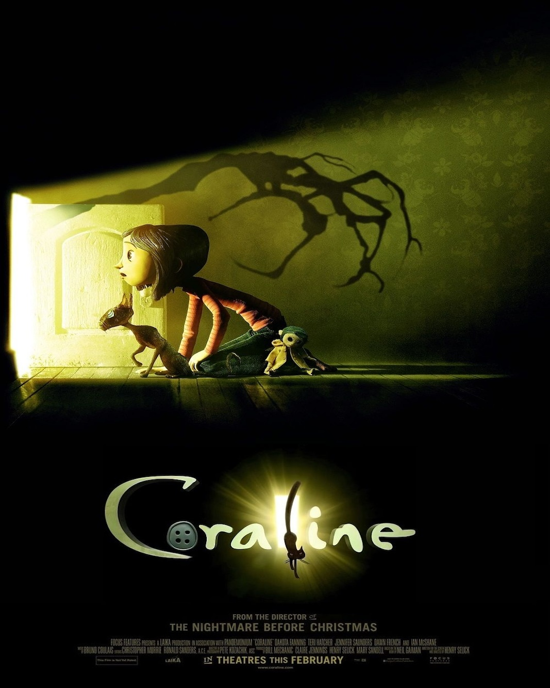While exploring her new home, a girl named Coraline discovers a secret door, behind which lies an alternate world that closely mirrors her own but, in many ways, is better. She rejoices in her discovery, until Other Mother try to keep her there forever. Coraline must use all her resources and bravery to make it back to her own family and life.
Zootopia
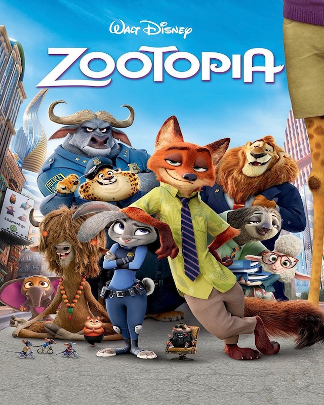From the largest elephant to the smallest shrew, the city of Zootopia is a mammal metropolis where various animals live and thrive. When Judy Hopps becomes the first rabbit to join the police force, she quickly learns how tough it is to enforce the law. Determined to prove herself, Judy jumps at the opportunity to solve a mysterious case. Unfortunately, that means working with Nick Wilde, a wily fox who makes her job even harder.
10 Things I Hate About You
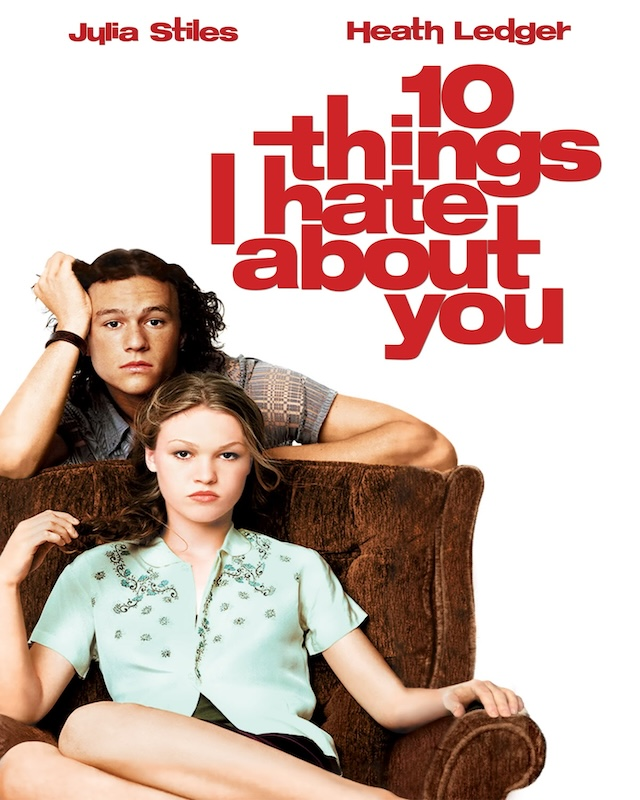Kat Stratford is beautiful, smart and quite abrasive to most of her fellow teens, meaning that she doesn't attract many boys. Unfortunately for her younger sister, Bianca, house rules say that she can't date until Kat has a boyfriend, so strings are pulled to set the dour damsel up for a romance. Soon Kat crosses paths with handsome new arrival Patrick Verona. Kat may let her guard down enough to fall for the effortlessly charming Patrick.
Suzume
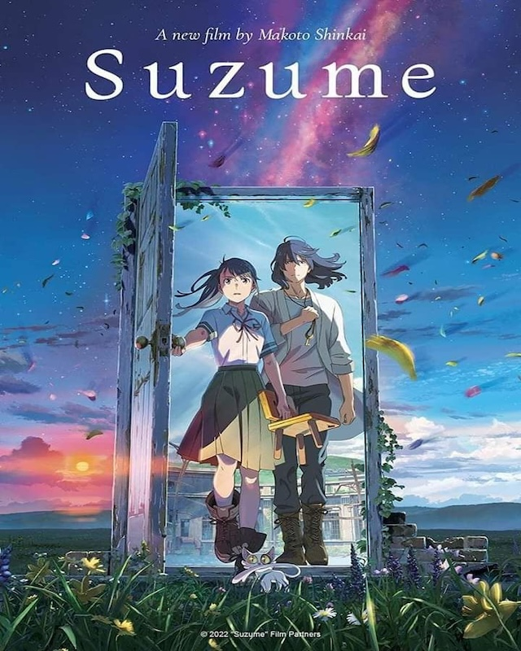17-year-old Suzume's journey begins in a quiet town in Kyushu when she encounters a young man who tells her, "I'm looking for a door." What Suzume finds is a single weathered door standing upright in the midst of ruins as though it was shielded from whatever catastrophe struck. Doors begin to open one after another all across Japan, unleashing destruction upon any who are near. Suzume must close these portals to prevent further disaster
Your Name
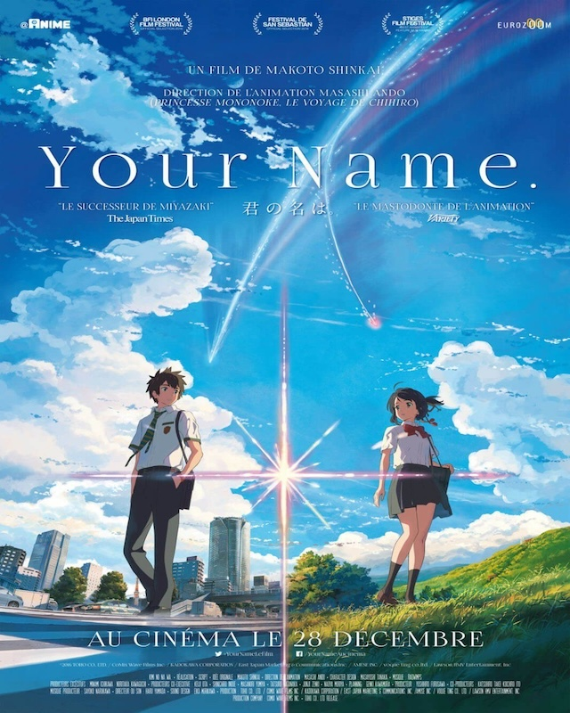A teenage boy and girl embark on a quest to meet each other for the first time after they magically swap bodies. They communicate through notes to navigate each other's lives, leading to a deep connection and a search for a way to meet in person, which becomes complicated by a twist in the story involving time and fate.
A Silent Voice
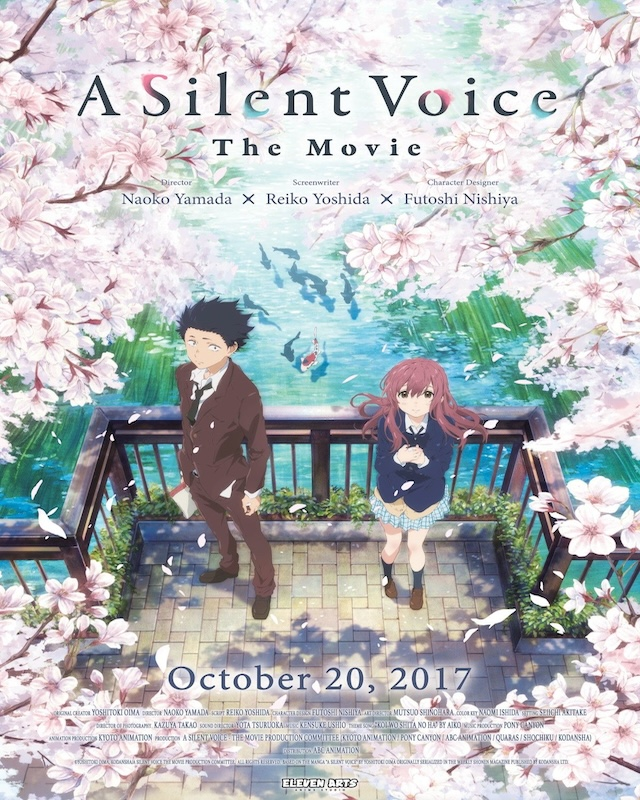After transferring into a new school, a deaf girl, Shoko Nishimiya, is bullied by the popular Shoya Ishida. As Shoya continues to bully Shoko, the class turns its back on him. Shoko transfers and Shoya grows up as an outcast. Alone and depressed, the regretful Shoya finds Shoko to make amends.
Spirited Away
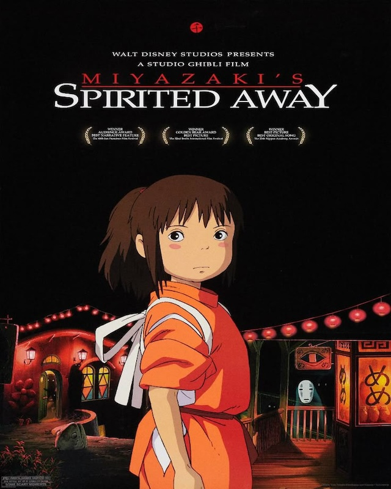10-year-old Chihiro moves with her parents to a new home in the Japanese countryside. After taking a wrong turn down a wooded path, Chihiro and her parents discover an amusement park with a stall containing an assortment of food. To her surprise, Chihiro's parents begin eating and then transform into pigs. In this supernatural realm, Chihiro encounters a host of characters and endures labor in a bathhouse for spirits, awaiting a reunion with her parents.
Harry Potter
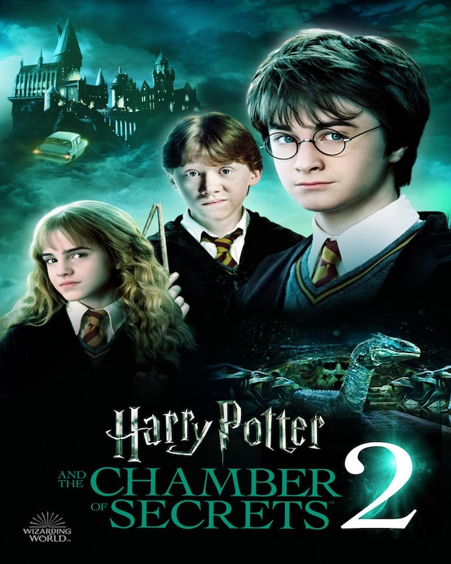The follow-up to "Harry Potter and the Sorcerer's Stone" finds young wizard Harry Potterand his friends, Ron and Hermione, facing new challenges during their second year at Hogwarts School of Witchcraft and Wizardry as they try to discover a dark force that is terrorizing the school.